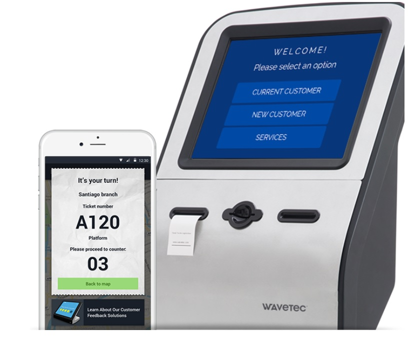

The innovation of our technology does more than solve customer queuing problems. Digitricx System’s Queue Management System streamlines all6 queues, improves the quality of customers’ service, controls queue more effectively and tracks productivity across the environment.
SMARTQ Queue Management System attends to customers’ needs by making waiting more comfortable, entertaining and relaxing. SMARTQ Queue Management System allows customers to browse the surroundings, and provides them with peace of mind. SmartQ Queue Management System ensures each customer is served in a well-ordered way and by experienced staff.
Increase corporate visibility with dynamic multimedia screens. The multimedia extends beyond customer directional information for advertising, informational and promotional campaigns.
Track customers from the moment they arrive until they leave. Even when they are transferred to another counter, their data is tracked and maintained.
All the tickets are tracked from the moment they are issued till they are served and are integrated to the reporting system for real-time management. SMARTQ Queue Management System provides a wealth of statistics for service analysis and evaluation including waiting time, service time, peak flows, KPIs etc.
